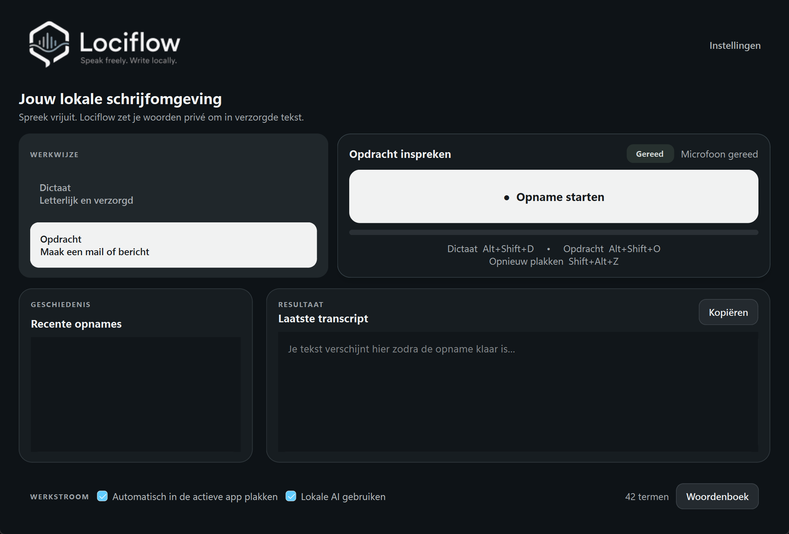

Dicteermodus
Zet wat je zegt om in natuurlijk Nederlands, met correcte zinnen en interpunctie zonder de betekenis te veranderen.
Lociflow zet je stem om in verzorgde tekst en helpt je opdrachten uitwerken — rechtstreeks op je eigen computer.
Geen account nodig · Geen cloudverwerking · Windows 10 en 11

Zet wat je zegt om in natuurlijk Nederlands, met correcte zinnen en interpunctie zonder de betekenis te veranderen.
Zeg wat je nodig hebt — van een e-mail tot een antwoord — en Lociflow maakt er een passende tekst van.
Selecteer een deel van je scherm en gebruik die informatie als extra context voor je gesproken opdracht.
Spraakherkenning en tekstverwerking gebeuren met lokale AI-modellen. Je dictaten hoeven niet naar een externe dienst te worden verstuurd.
Geen internet nodig tijdens gebruikNa de installatie werkt de verwerking lokaal.
Werkt met CPU en NVIDIALociflow kiest automatisch de geschikte verwerking.
Tijdelijke opnamesOpnames en recente geschiedenis worden bij volledig afsluiten gewist.
Download één kleine installer. Die haalt automatisch de benodigde lokale AI-modellen op en kiest daarna de beste verwerking voor je computer.